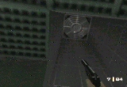
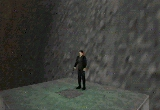
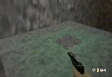
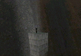
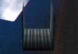
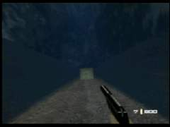
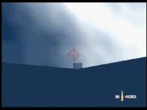
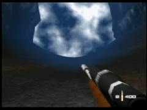

Le Barrage reste le Niveau qui a subi pas mal de changements. Au Départ, il devait etre trop compliqué pour un Premier Niveau. D'abord, le Camion Vert : au Départ, on devait l'exploser, c'était un Objectif. Dedans se trouvait l'Elastique vous servant à sauter. Le Camion reste là, et sert maintenant de "Guide" pour vous amener dans la Suite du Niveau, aux Portes Coulissantes. Une image de la Montre de Bond montre que le Dernier Objectif (sauter) est completé. Mais comment peut-on réussir cet objectif et continuer à jouer dans le Barrage ?! Ca n'a pas de sens !! Et bien en fait, on devait sauter, puis entrer dans le Conduit menant à Facility !


Sur l'image du Dossier, on voit les Objectifs en Secret Agent. On notera qu'on n'a pas à faire le Data Backup ni le Modem dans le Jeu Final. Peut-etre que les Objectifs concernant l'Ile étaient-ils en Agent 00 ? Il y a aussi le Mysterieux Rideau de Fer censé abriter les Mines servant à faire sauter le Camion. On suppose que le Commandant Russe avait sur lui la Clé de Contact pour le Bateau. Pour faire apparaitre le Bateau à la Place du Camion Vert, c'est par ici !


Une Rare Photo montre l'Agent Double vous donnant la Clé : le Commandant Russe !!

Des Photos de Plaques d'Egouts laissent penser que les Gardes devaient les emprunter comme vous, mais qu'il y avait quelques Bugs, comme lorsque les Gardes descendent des Tours du Barrage et qu'ils se tapent un Saut de 3 Metres tranquillement.



Avec le Debug Mode, on peut voir l'Entrée Cachée de Facility que l'on ne peut plus voir dans la Version Finale, et à quoi elle ressemble vue de dessous. On peut aussi couper les Cinématiques pour voir la suite, et même faire apparaitre des Alarmes Beta !














